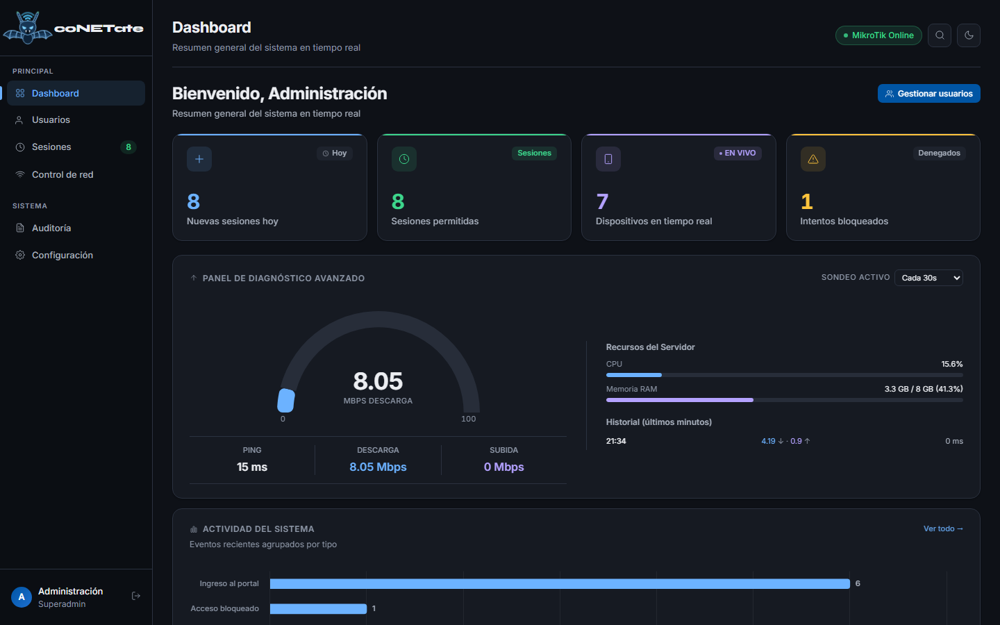
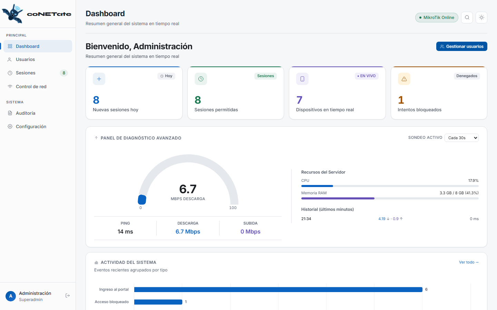
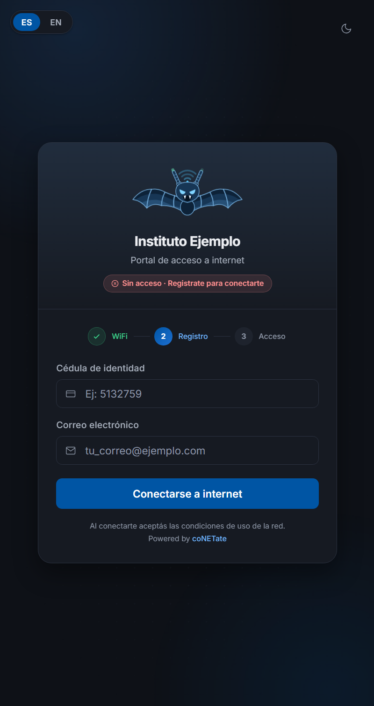
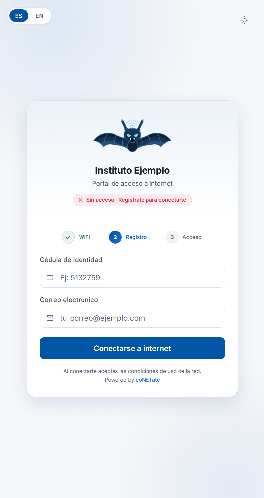
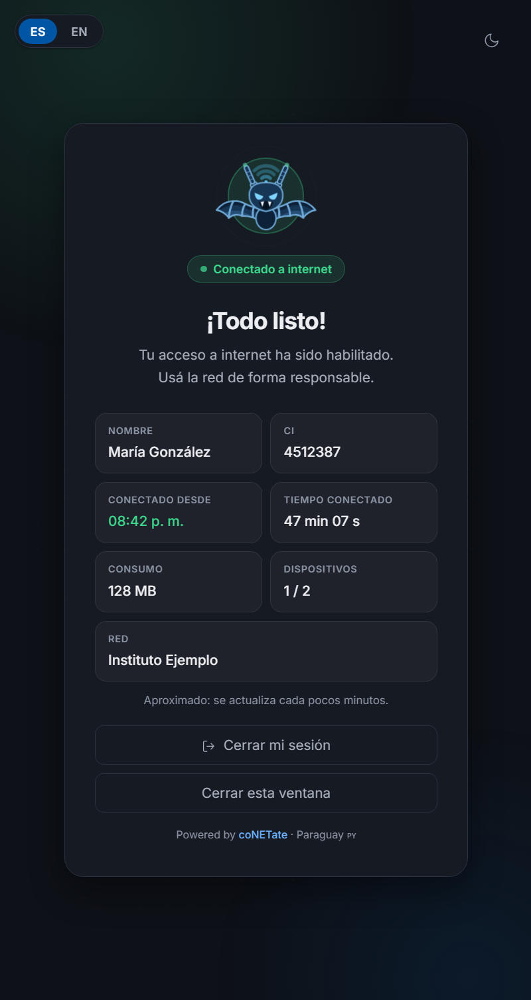
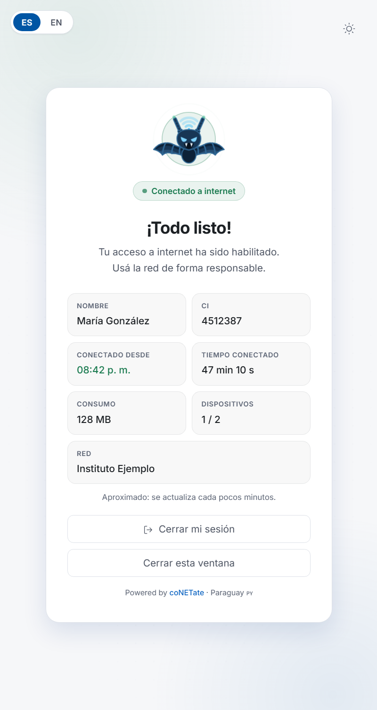

Tu WiFi, con nombre y apellido.
coNETate controla quién entra a la red WiFi de tu institución. Cada persona se conecta con su cédula y su correo, y desde un panel ves quién está conectado, aprobás visitantes, bloqueás redes sociales y tenés el registro de todo lo que pasó.
Una puerta de entrada para tu red WiFi
Hoy la mayoría de las instituciones comparte una contraseña del WiFi. coNETate la reemplaza por un portal cautivo: la pantalla que aparece sola al conectarte, como en un aeropuerto o un hotel. Sin registrarte, no hay internet.
WiFi con contraseña
- La clave circula por grupos de WhatsApp y termina en manos de cualquiera.
- No sabés quién está conectado ni desde cuándo.
- Para sacar a alguien hay que cambiar la clave… a todos.
- No hay forma de limitar redes sociales o juegos en horario de clase.
- Un visitante necesita que alguien le dicte la contraseña.
WiFi con coNETate
- Cada persona entra con su cédula y su correo registrados.
- Ves en vivo quién está conectado, con qué equipo y cuánto consume.
- Cortás el acceso de una persona con un clic, sin tocar a los demás.
- Bloqueás TikTok, Instagram o juegos desde un catálogo listo.
- Los visitantes piden acceso desde el celular y vos lo aprobás con tiempo límite.
De «sin internet» a «conectado» en cinco pasos
Todo pasa en segundos y la persona no instala nada.
Se conecta al WiFi
La red es abierta, pero el router no deja salir a internet a nadie que no esté autorizado.
Aparece el portal
El celular detecta el portal cautivo y abre solo la pantalla de coNETate.
Cédula y correo
Se verifica que la persona esté registrada, activa y sin pasarse del límite de dispositivos.
El MikroTik autoriza
coNETate agrega la IP del equipo a la lista de autorizados del router por su API.
¡A navegar!
Queda registrado en la auditoría y aparece al instante en el panel del administrador.
Probalo vos mismo
A la izquierda, el celular de una persona que llega a la institución. A la derecha, el panel del administrador. Lo que hacés en uno se ve en el otro. Todo es una simulación con datos de ejemplo: no se envía nada a ningún lado.
Redes disponibles
2Registro
3Acceso
Ya tenés acceso a internet.
tiempo conectado
Probá abrir algunos sitios. Los que estén bloqueados en Control de red no van a cargar.
Un administrador recibe tu pedido y te da acceso por un tiempo.
Tu solicitud llegó al administrador. Esta pantalla avanza sola cuando la apruebe.
El administrador no aprobó el acceso.
Celular simulado. En la vida real, el portal se abre solo al conectarse a la red.
Dashboard
Resumen general del sistema en tiempo real
| Persona | CI | Estado | Acceso |
|---|
| Persona | Equipo · IP | Tiempo | Acción |
|---|
^(.*\.)?tiktok\.com$ → 127.0.0.1. Además se cierran los atajos para saltarse el bloqueo (DNS cifrado, Private Relay del iPhone).Mirá el celular: el portal cambia al momento. En el sistema real se elige cualquier color y coNETate calcula los tonos para que el texto se lea bien en tema claro y oscuro.
Todo lo que necesita quien administra la red
Pensado para que lo use cualquier persona de la institución, sin saber de redes.
Acceso con CI y correo
Solo entra quien está registrado y activo, con un límite de dispositivos por persona.
Panel en vivo
Conectados, tráfico de entrada y salida, CPU y RAM del router y prueba de velocidad.
Visitantes
Piden acceso desde el portal; los aprobás con cantidad de dispositivos y hora de vencimiento.
Control de contenido
Catálogo de unos 35 servicios (TikTok, Roblox, ChatGPT…) para bloquear con un clic.
Auditoría completa
Quién hizo qué, cuándo y qué cambió, con informe imprimible y exportación.
Importar desde Excel
Cargá cientos de usuarios desde una planilla; coNETate adivina qué columna es cuál.
Tu marca
Logo, color y textos propios en el portal. Sirve para un colegio, un hotel o un negocio.
Tres idiomas
El portal habla español, inglés y guaraní (en beta), según el idioma del celular.
Sesiones inteligentes
Reconoce el equipo por su MAC, cierra sesiones abandonadas y no se cae por un corte de WiFi.
Acceso seguro al panel
Contraseñas con bcrypt, ingreso con Google, recuperación por correo y freno de intentos.
Panel desde internet
Se administra desde afuera de la institución a través de un túnel HTTPS.
Pensado para el celular
Panel y portal adaptados a cualquier pantalla, con tema claro y oscuro.
Una misma herramienta, muchos lugares
coNETate no está atado a una institución: cada una pone su nombre, su logo y sus colores.
Colegios y universidades
Alumnos y docentes con su CI; redes sociales bloqueadas en horario de clase.
Hoteles y hospedajes
Cada huésped como visitante, con acceso que vence el día de salida.
Comercios y oficinas
WiFi para clientes sin regalar la clave del personal, y un registro de quién usó la red.
Eventos y capacitaciones
Lista de asistentes importada desde Excel y acceso solo durante el evento.
Así se ve coNETate funcionando
Capturas del sistema con datos de ejemplo. Cambian con el tema claro u oscuro de esta página.






Simple por dentro, para que ande en hardware modesto
Tres piezas: el celular, el router MikroTik y una PC que corre coNETate. No depende de servicios en la nube.
Liviano a propósito
Medido sobre un MikroTik hAP lite, uno de los routers más económicos de la marca.
Lo que suelen preguntar
¿La persona tiene que instalar algo?
No. Al conectarse al WiFi, el celular o la computadora detecta el portal cautivo y abre solo la pantalla de coNETate. Funciona con iPhone, Android, Windows y Mac.
¿Qué pasa si se corta el WiFi un momento?
Nada. La sesión sigue abierta mientras el equipo vuelva antes de la tolerancia configurada (por ejemplo, 30 minutos). Si vuelve con otra IP, coNETate lo reconoce por su MAC y lo deja pasar directo.
¿El panel necesita internet?
No. Todo (fuentes, gráficos, íconos) está en el propio servidor, así que el panel abre aunque la red se haya quedado sin salida a internet o el router esté caído.
¿Se puede saltar el bloqueo de una red social?
coNETate fuerza el DNS de todos los equipos al router y cierra los atajos más comunes: DNS cifrado (DoH y DoT) y el Private Relay del iPhone. Un equipo que ya tenía la página abierta puede tardar unos minutos en notar el bloqueo.
¿Funciona con cualquier router?
Está hecho para routers MikroTik con RouterOS, porque usa su API para autorizar equipos y bloquear dominios. Se probó en un hAP lite, que es de los más chicos.
¿Qué datos guarda?
Cédula, nombre y correo de cada persona, sus sesiones (IP, equipo, inicio y fin, consumo) y la auditoría de lo que hicieron los administradores. Todo queda en el servidor de la institución, no en la nube.
Te presento a Mbopi
«Mbopi» es murciélago en guaraní: se orienta con ondas, como el WiFi. Es la mascota de coNETate y te acompaña en el portal, en el panel y cuando algo falla.